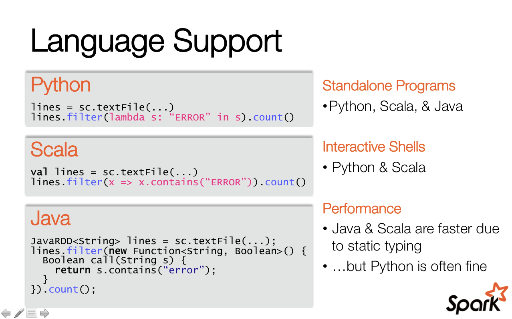

Spark
T. Verbeiren
9/7/2014
Contents
Introduction
Spark
Ecosystem
Not covered
Example(s)
Me, Myself and I

Introduction
Distribution is hard ...
2 world views:
- High Performance Computing
- High Throughput Computing
Map / Reduce
map
reduce
(Nothing special ?!)
Word Count in M/R

import java.io.IOException;
import java.util.*;
import org.apache.hadoop.fs.Path;
import org.apache.hadoop.conf.*;
import org.apache.hadoop.io.*;
import org.apache.hadoop.mapreduce.*;
import org.apache.hadoop.mapreduce.lib.input.FileInputFormat;
import org.apache.hadoop.mapreduce.lib.input.TextInputFormat;
import org.apache.hadoop.mapreduce.lib.output.FileOutputFormat;
import org.apache.hadoop.mapreduce.lib.output.TextOutputFormat;
public class WordCount {
public static void main(String[] args) throws Exception {
Configuration conf = new Configuration();
Job job = new Job(conf, "wordcount");
job.setOutputKeyClass(Text.class);
job.setOutputValueClass(IntWritable.class);
job.setMapperClass(Map.class);
job.setReducerClass(Reduce.class);
job.setInputFormatClass(TextInputFormat.class);
job.setOutputFormatClass(TextOutputFormat.class);
FileInputFormat.addInputPath(job, new Path(args[0]));
FileOutputFormat.setOutputPath(job, new Path(args[1]));
job.waitForCompletion(true);
}
public static class Map extends Mapper<LongWritable, Text, Text, IntWritable> {
private final static IntWritable one = new IntWritable(1);
private Text word = new Text();
public void map(LongWritable key, Text value, Context context) throws IOException, InterruptedException {
String line = value.toString();
StringTokenizer tokenizer = new StringTokenizer(line);
while (tokenizer.hasMoreTokens()) {
word.set(tokenizer.nextToken());
context.write(word, one);
}
}
}
public static class Reduce extends Reducer<Text, IntWritable, Text, IntWritable> {
public void reduce(Text key, Iterable<IntWritable> values, Context context)
throws IOException, InterruptedException {
int sum = 0;
for (IntWritable val : values) {
sum += val.get();
}
context.write(key, new IntWritable(sum));
}
}
}What if ...
... we could just write
val y = x map () reduce ()... this could be extended
val y = x map () filter() map () flatMap () reduce ()What would be needed?
- Platform
- Parallel abstraction mechanism
- Language support
Spark
- Berkeley University
- Apache Project
- v1.0 released on May 30d 2014
- Written in Scala
- Supported by DataBricks
- Used by ...
Language support

Platform
Built for low-latency
Abststraction mechanism
Resilient Distributed Datasets
RDDs
Immutable Collection
Accepting transformations and actions
Transformations
mapfiltersampleunion/intersectiongroupByKeyreduceByKeyjoin- ...
Actions
reducecollectcounttake(n)saveAsTextFile- ...
The first example
\[\text{P}(\text{hitting circle}) \approx \text{Surface circle} = \frac{\pi}{4}\]
import sc._
val N = 10000000
// Generate a sequence of numbers and distribute
val par = parallelize(1 to N)
// Generate a point in 2D unit square
def randomPoint:(Double,Double) = {
val x = Math.random()
val y = Math.random()
(x,y)
}
// Check if a point lies in the unit circle
def inCircle(point:(Double,Double)):Int = {
if (point._1*point._1 + point._2*point._2 < 1) 1 else 0
}// List of hits yes/no
val inCircleList = par map(i => inCircle(randomPoint))
// Return the first 5 elements from the RDD
inCircleList take 5
// Get info about the RDD
inCircleList.toDebugString
// The number of hits
val total = inCircleList reduce (_+_)
// Probability of hitting the circle *4 = Pi
val S = 4. * total / NFrom the Spark examples page
val count = parallelize(1 to N).map{i =>
val x = Math.random()
val y = Math.random()
if (x*x + y*y < 1) 1 else 0
}.reduce(_ + _)
println("Pi is roughly " + 4.0 * count / N)Hadoop M/R in Spark
// Read a file from Hadoop FS, (e.g. Ulysses / Project Gutenberg)
// and process it similar to Hadoop M/R
val file = textFile("Joyce-Ulysses.txt")
// Convert to an array of words in the text
val words = file.flatMap(_.split(" "))
// Map to (key,value) pairs
val mapped = words map (word => (word,1))
// Sort and group by key,
// Result is of form (key, List(value1, value2, value3, ...))
val grouped = mapped sortByKey() groupByKey()
// The length of the values array yields the amount
val result = grouped map {case (k,vs) => (k,vs.length)}
// But where is the *reduce*?Be careful with definitions of map and reduce!
// Read a file from Hadoop FS, (e.g. Ulysses / Project Gutenberg)
// and process it similar to Hadoop M/R
val file = textFile("Joyce-Ulysses.txt")
// Convert to an array of words in the text
val words = file.flatMap(_.split(" "))
// Map to (key,value) pairs
val mapped = words map (word => (word,1))
// Sort and group by key,
// Result is of form (key, List(value1, value2, value3, ...))
val grouped = mapped sortByKey() groupByKey()
// The length of the values array yields the amount
// val result = grouped map {case (k,vs) => (k,vs.length)}
val result = grouped map {case (k,vs) => (k, vs reduce (_+_))}In Spark, we would use:
val file = textFile("Joyce-Ulysses.txt")
val words = file.flatMap(_.split(" "))
val mapped = words map (word => (word,1))
val result = mapped reduceByKey(_+_)
result collect... and REPL
... and Web interface

... and distributed memory caching
val file = textFile("Joyce-Ulysses.txt")
val words = file.flatMap(_.split(" "))
val mapped = words map (word => (word,1))
// Cache the RDD for later use
val cached = mapped cache()
// Use the cached version
val result = cached reduceByKey(_+_)
// Oops, nothing happens?
result.collect
// Laziness... oh my
result.collect
// Count how many times the word 'the' occurs in the text
cached filter {case(word,v) => word=="the"} reduceByKey(_+_) collect... and interactive use
... and the Ecosystem
- Spark SQL: http://spark.apache.org/sql/
- Spark Streaming: http://spark.apache.org/streaming/
- BlinkDB: http://blinkdb.org/
- MLlib: http://spark.apache.org/mllib/
- GraphX: http://spark.apache.org/graphx/
- SparkR: http://amplab-extras.github.io/SparkR-pkg/
Not covered
Better ?
Faster ?
Easier ?
...
RDDs Under the Hood
http://dl.acm.org/citation.cfm?id=2228301

Configuration & Performance
https://spark.apache.org/docs/latest/configuration.html
https://spark.apache.org/docs/latest/tuning.html

Installation & Deployment
https://spark.apache.org/docs/latest/cluster-overview.html

Example(s)
Genomic Data

3 billion base pairs (\(3.2 \times 10^9\))
Packaged in chromosomes
~ 3GB for one human
Analysis requires a lot of processing power and storage
Transcription Factors: proteins that bind on region
Coverage: basepair occurence in sequencing
Coverage data:
Chromosome Position Sequencing coverage
19 11004 1
19 11005 2
19 11006 2
19 11007 2
19 11008 3
19 11009 3Transcription Factor data:
> awk 'BEGIN {srand()} !/^$/ { if (rand() <= .00001) print $0}' bedfile.bed
chr1 70529738 70529754 Maf . -
chr1 161676477 161676495 Pou2f2 . -
chr1 176484690 176484699 AP-1 . -
chr10 6020071 6020084 CTCF . -
chr11 1410823 1410838 NF-Y . -
chr16 4366053 4366067 YY1 . +
chr17 77824593 77824602 BAF155 . +
chr19 10947006 10947013 Rad21 . -
chr19 49342112 49342121 SIX5 . +
chr22 39548908 39548922 Irf . +
chr7 100048475 100048485 Egr-1 . -
chr8 119123364 119123374 YY1 . +
chr8 128562635 128562649 p300 . -
chr9 14315969 14315982 Egr-1 . -
chrX 101409366 101409384 CTCF . +// Load files from HDFS
val covFile = sc.textFile("NA12878.chrom19.SLX.maq.SRP000032.2009_07.coverage",8)
val bedFile = sc.textFile("201101_encode_motifs_in_tf_peaks.bed",8)
// Class to hold records from coverage data
class covData(val chr: String, val pos: Int, val cov: Int) {
def this(line: Array[String]) {
this(line(0).toString, line(1).toInt, line(2).toInt)
}
}
// Class to hold records from Transcription Factor data
class tfsData(val chr: String, val pos1: Int, val pos2:Int, val tf: String) {
def this(line: Array[String]) {
this(line(0).toString, line(1).toInt, line(2).toInt, line(3).toString)
}
}// Turn input files into an RDD of objects
val cov = covFile.map(_.split("\\s+")).map(new covData(_))
val tfs = bedFile.map(_.split("\\s+")).map(new tfsData(_))
// Count the number of items in both datasets
cov.count
tfs.count
// Cache in memory
val ccov = cov cache
val ctfs = tfs cache
// Count once for the caching to occur
ccov.count
ctfs.count// Turn coverage data into K/V pairs
val kvcov = ccov.map(x => (x.pos,(x.cov))).cache
// Turn TF data into K/V pairs
val kvtfs = ctfs.filter(x => x.chr == "chr19").map(x => (x.pos1,(x.pos2,x.tf)))
// Activate the caching of the coverage data
kvcov.count
// Join both datasets together by key
val cjoined = kvcov.join(kvtfs)
// Waaaw, that's fast! In fact, nothing happened yet.
// select 5 entries to see the result but reformat first
val flatjoined = cjoined map { case(x,(y,(z,zz))) => (x,z,zz,y) }
flatjoined take 5
flatjoined.toDebugStringVisualization of Big Data
Visual Analytics


Part of treeDraw :
d3.select(window).on("keydown", function() {
d3.event.preventDefault();
switch (d3.event.keyCode) {
case 38:
zoomOut(tz,treeDraw);
break ;
case 40:
zoomIn(0,tz,treeDraw);
break;
case 37:
panLeft(tz,treeDraw);
break;
case 39:
panRight(tz,treeDraw);
break;
};
});object CovQuery extends SparkJob with NamedRddSupport {
type Range = (Int, Int)
type TreePath = List[Int]
val B = 100 // number of bins, also N
val Z = 10 // zoom level with every step
override def validate(sc: SparkContext, config: Config): SparkJobValidation = SparkJobValid
override def runJob(sc: SparkContext, config: Config): Any = {
// a map with the persistent RDDs
val listOfPersistentRDDs = sc.getPersistentRDDs
val chrCache = namedRdds.get[DataPoint](myRDD).get
// Info about the interval
val superMin = low
val superMax = high
val subRange: Range = calcRange(path,superMin,superMax)
val mn = subRange._1
val mx = subRange._2
// The bin width, based on the number of bins (N)
val delta = (mx - mn) / B
// Only filter the region within the interval
val chrCache1 = chrCache filter (x => (mn <= x.position) && (x.position <= mx))
// Create the bins as the first argument of a new triple
val x1 = chrCache1 map (x => (myDiv(x.position - mn, delta), x.position, x.coverage))
// sum, max and min can be done on only the bin number and the coverage:
val fork1 = x1.map(x => (x._1,x._3))
// The 4 statistics
val sumSet = fork1.reduceByKey(_ + _)
val maxSet = fork1.reduceByKey(Math.max(_,_))
val minSet = fork1.reduceByKey(Math.min(_,_))
val countSet = x1.map(x => (x._1,1)).reduceByKey(_+_)
// Join the data and flatten the (nested) result
val joined = sumSet.join(maxSet).join(minSet).join(countSet)
val collected = joined.collect().map(x => (x._1, flattenT3(x._2)))
// The boundaries in the original coordinate can not be derived
// from the data, because it can not cope with empty regions.
val lowerboundRange = mn until mx by delta
val lowerboundIndex = 0 until B
val lowerbound = lowerboundIndex zip lowerboundRange
val dataMap =collected.map(x=> (x._1,List(x._2._1,x._2._2,x._2._3,x._2._4,x._2._1/x._2._4))).toMap.withDefaultValue(List(0,0,0,0,0))
return lowerbound.map(x => (x._1,List(x._2) ++ dataMap(x._1)))
}
Paper submitted to LDAV 2014

The end
Some links:
- @tverbeiren
- Slides: https://github.com/tverbeiren/BigDataBe-Spark
- Spark Home: https://spark.apache.org/
- Data Visualization Lab: http://datavislab.org
- ExaScience Life Lab: http://www.exascience.com/
- Data Intuitive: http://data-intuitive.com